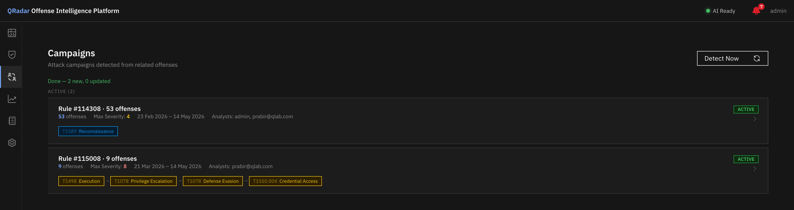
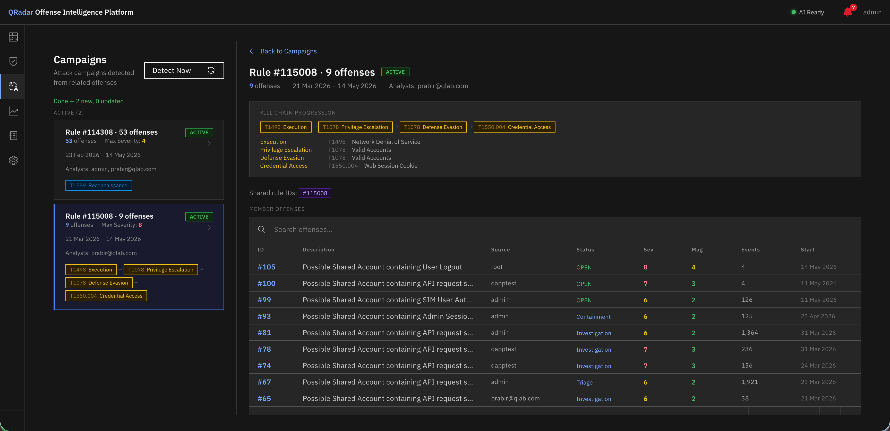
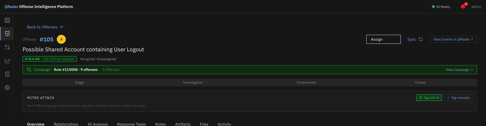

Campaign Detection¶
Overview¶
A sophisticated attacker rarely generates a single offense. They generate dozens — each one looking isolated when viewed individually. Campaign Detection automatically identifies that those offenses are related and surfaces them as a named attack campaign with a unified kill chain, date range, and analyst context.
No AI required
Campaign Detection is pure graph computation — no LLM inference. It works by grouping offenses that share the same detection rule or attacker source, then running a BFS (breadth-first search) to find connected clusters. It is fast, deterministic, and runs even on offenses that have never been AI-analyzed.
How Detection Works¶
1. Build the adjacency graph¶
The detection engine queries all offenses in the configured time window (default: 90 days) and builds an adjacency graph:
- Two offenses are connected if they share at least one QRadar detection rule ID
- Two offenses are also connected if they share the same offense source (attacker IP, username, or CEP)
This is the same signal used by the Relationship Graph — but applied across all offenses simultaneously rather than from a single offense's perspective.
2. BFS connected components¶
A standard BFS algorithm walks the adjacency graph and groups all reachable offenses into connected components. Each component is a candidate campaign.
3. Filter by minimum size¶
Components with fewer than 3 offenses are discarded (configurable). This prevents single-pair relationships from becoming campaigns.
4. Compute campaign attributes¶
For each remaining component, the engine computes:
| Attribute | How it's computed |
|---|---|
| Name | Deterministic — see Campaign Naming |
| Kill chain | Aggregate MITRE tags across all member offenses, deduplicate by tactic, sort by tactic order |
| First seen / Last seen | Min/max of member offense start times |
| Common source | Offense source if all members share the same one, else null |
| Shared rule IDs | Intersection of rule ID sets across all members |
| Severity max | Highest severity among members |
| Assigned analysts | All unique non-null analyst assignments |
| Is causal chain | True if any lateral movement edge exists between members |
| Status | active if any member offense is OPEN, else closed |
5. Stable campaign IDs¶
Each campaign gets a stable ID computed as the MD5 hash of its sorted member offense IDs. This means the same cluster of offenses always gets the same campaign ID — across re-runs, nightly jobs, and manual detections.
If the cluster grows (new offense added), the ID changes because the membership changed. This is by design — it signals the campaign has evolved.
Campaign Naming¶
Campaign names are generated deterministically — no LLM required:
| Condition | Name format |
|---|---|
| All members share the same offense source | Source {IP} · {tactic chain} |
| Members share a common detection rule | {Rule Name} · {N} offenses |
| MITRE tactic data available | {Top Tactic} Campaign · {N} offenses |
| Fallback | Campaign · {N} offenses |
The tactic chain appended to source-based names shows the first three tactics in the kill chain (e.g. Reconnaissance → Initial Access → Lateral Movement).
Running Campaign Detection¶
On demand¶
- Navigate to Campaigns in the left navigation
- Click Detect Now
- Detection runs in the background — the page polls for completion
- Results appear within a few seconds for most environments
Scheduled (nightly)¶
The Campaign Detection scheduler job runs nightly at 04:00 by default (after MITRE tagging at 03:00). Enable it under Settings → Job Scheduler.
The job runs silently, updates existing campaigns with new member offenses, creates new campaigns, and marks campaigns as closed when all their member offenses are closed.
Campaign List View¶

Campaign list — each card shows name, offense count, kill chain progression, severity, and date range.The Campaigns page shows all detected campaigns grouped by status (Active / Closed).
Each campaign card displays:
- Name — deterministic campaign name
- Status badge — ACTIVE or CLOSED
- Offense count — number of member offenses
- Max severity — highest severity in the campaign
- Date range — first seen → last seen
- Assigned analysts — all analysts who have been assigned any member offense
- Kill chain bar — tactic chips in kill chain order (e.g.
[Recon] → [Initial Access] → [Lateral Movement]) - Lateral movement warning — shown when a causal chain is confirmed between member offenses
Click any campaign card to open the detail view.
Campaign Detail View¶

Campaign detail — full kill chain with technique IDs and counts, plus a searchable member offense table.The campaign detail view shows:
Kill chain progression¶
A full tactic breakdown showing which techniques were observed at each stage:
[Reconnaissance] [Initial Access] [Lateral Movement]
T1595 · 49 offs → T1078 · 8 offs → T1021 · 3 offs
Each tactic chip links to the relevant ATT&CK technique page.
Shared detection rules¶
The list of QRadar rule IDs present in all (or most) member offenses — the common thread that tied the campaign together.
Member offenses table¶
A paginated, searchable table of all member offenses with: - Offense ID and description - Start time - Severity and magnitude - Status and lifecycle stage - Assigned analyst - Click to open the offense in the full Offense Detail view
Campaign Banner on Offense Detail¶

Campaign banner on Offense Detail — click to navigate directly to the campaign view.When an offense is a member of a detected campaign, a green banner appears on the Offense Detail page (Overview tab, below the SLA indicator):
Clicking the banner navigates directly to the campaign detail view.
Lateral Movement Detection¶
If the pre-computed offense_relationships table contains any pairs with is_causal_chain = 1 between campaign members, the campaign is flagged as a causal chain. This means the destination IPs of one offense's events overlap with the source IPs of a subsequent offense — a direct indicator of lateral movement.
Causal chain campaigns show a ⚠ Lateral movement warning on the campaign card.
Causal chain data requirement
Lateral movement detection requires event-level data from the AI analysis pipeline (Phase 5 relationship scoring). Offenses that have not been AI-analyzed will not contribute causal chain edges, though they can still join campaigns through shared rule or source signals.